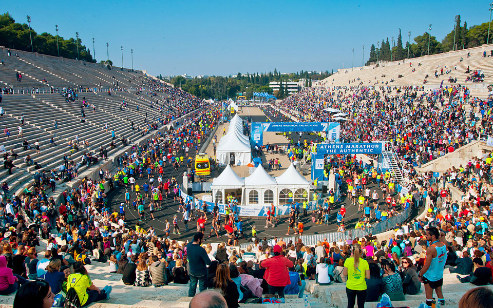
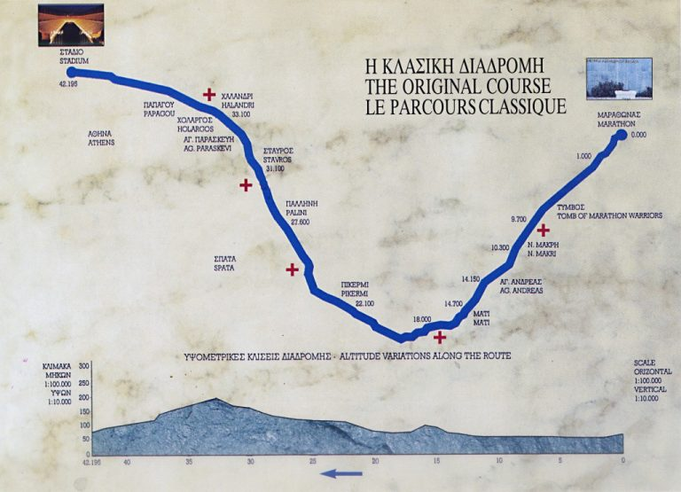
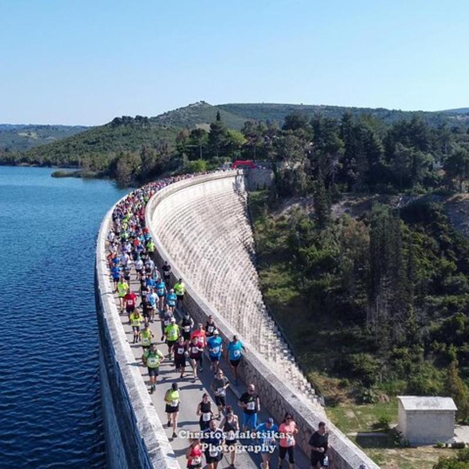

🏛️ 賽事名片與封面
雅典經典馬拉松 (Athens Authentic Marathon)
奔跑於 2,500 年正宗起源賽道，從馬拉松平原奔向全大理石帕那辛奈克體育場
🏃 賽事歷史定位
正宗發源地
- 傳奇起源：傳承西元前 490 年馬拉松戰役傳令官菲迪皮德斯「我們勝利了」傳奇
- 奧運原點：1896 首屆現代奧運馬拉松原版路線，送水工路易斯奪金榮耀起點
- 官方認證：希臘業餘田徑協會（SEGAS）主辦，世界田聯金標（Gold Label）認證
- 全球規模：全馬吸引逾 24,000 名國際跑者，總參與人數突破 78,000 人
- 朝聖地位：全球長跑愛好者一生必跑的「正宗原點（The Authentic）」史詩之戰
金標賽事
2,500 年原點
全馬 2.4 萬人
IAAF 金標路跑 ｜ 馬拉松運動 2,500 年正宗起源地
🌍 跑旅核心精神
史詩儀式
- 神聖聖火：賽前於馬拉松戰役古墓點燃「馬拉松聖火」並接力傳遞至體育場
- 正宗賽道：100% 還原歷史路線，由馬拉松鎮出發，直達雅典全大理石體育場
- 魔鬼坡考驗：10~31 公里長達 21 公里連續爬升（爬升約 350m），不求 PB 只求圓夢
- 榮耀桂冠：跑入帕那辛奈克體育場，全場觀眾高喊 Bravo 並致贈月桂樹葉
不求個人 PB ｜ 在正宗史詩賽道上重溫人類堅毅傳奇

🏛️
帕那辛奈克大理石體育場
圖片路徑：images/athens_01.jpg
圖 1：帕那辛奈克體育場 ｜ 1896 首屆現代奧運主場館與全大理石終點線
📋 賽事基本資訊
競賽規程與極限數據
每年 11 月第二個週日開跑，21 公里長爬升與 8 小時超長寬容限時
⏱️ 舉辦時程與組別
寬容限時
- 舉辦時間：每年 11 月第二個星期日（地中海深秋，氣候溫和）
- 競賽組別：全程馬拉松（42.195 km）、10 公里公路賽、5 公里公路賽
- 關門時限：全馬關門時間長達 8 小時，對朝聖跑者極為友善
- 出發分區：全馬規劃 15 個起跑分區（Waves），每梯次間隔約 2 分鐘出發
- 參賽規模：全馬報名達 2.4 萬人，完賽率高達 80% 以上
全馬 8 小時
15 個起跑分區
⛰️ 垂直爬升與剖面
長坡考驗
- 平緩起步：0~10 km 自馬拉松鎮出發，地形平順利於建立呼吸步頻
- 連續長爬升：10~31 km 長達 21 公里連續上坡，Strava 實測爬升約 352 公尺
- 坡段特徵：爬升雖漫長，但大部分最陡坡段長度控制在 500 公尺以內
- 後半程下坡：31~42.195 km 最後 11 公里為連續緩下坡，淨下降約 160 公尺
- 成績預估：受長爬升影響，完賽時間通常比平路馬拉松慢 20 至 60 分鐘
連續長坡 21km
爬升約 350m
🛣️ 路面條件與傾角
公路路況
- 公路鋪設：賽道全程為柏油鋪裝路面，平整無越野碎石
- 路面傾斜：因排水設計，公路兩側傾角較大，選線需注意雙腳受力平衡
- 歷史地標：途經士兵古墓、新馬克里海岸與雅典市中心《奔跑者》雕像
- 終點震撼：最後一哩轉入全大理石帕那辛奈克體育場，歡呼聲迴盪
- 水站密度：沿途每 2.5 公里設水站，發放整瓶瓶裝水與補給
全程柏油
每 2.5km 水站
🏛️ 賽事榮譽與傳承
金標榮譽
- 國際金標：獲世界田聯（World Athletics）金標路跑認證與 AIMS 認證
- 希臘錦標賽：長年作為希臘全國馬拉松錦標賽與歐洲頂級馬拉松盛會
- 紀念獻禮：賽事獻給希臘人權倡議先驅格里戈里斯·蘭布拉基斯
- 聖火儀式：承襲古希臘文明傳承，賽前於戰役古墓舉行神聖點火儀式
- 完賽獎牌：精緻鑄造古希臘浮雕獎牌，為全球跑者必收經典勳章
世界田聯金標
聖火點燃儀式
⚡ 賽道結構與魔王路段
21 公里連續爬升與帕那辛奈克大理石終點
突破 10 至 31 公里漫長耐力爬坡，最後 11 公里俯衝進全大理石主場館
🗺️ 賽道分段結構剖析
全馬 42.195 km
- 平原出發（0~10 km）：行經士兵墓與海濱新馬克里，地勢平緩配速平穩
- 長坡長廊（10~20 km）：坡度逐漸加大，進入長坡耐力抗衡階段，心率嚴控
- 魔鬼頂點（21~31 km）：經過半馬補給點後持續向上攀升至最高點（海拔約 250m）
- 重力俯衝（31~38 km）：轉為緩下坡延伸至雅典市中心，重力輔助釋放肌肉
- 體育場榮耀（39~42.195 km）：穿過《奔跑者》雕像，衝進帕那辛奈克體育場完賽
100% 還原菲迪皮德斯歷史足跡 ｜ 從海濱古平原直奔雅典心臟
🛑 魔王路段：10~31 km 連續長坡
耐力意志
- 連續 21 公里長坡：全球罕見的漫長連續爬坡，極度考驗腿部肌力與心肺耐力
- 快走（Power Walk）戰術：非菁英跑者面對陡坡切忌硬衝，切換為快走步頻有效保留體力
- 下坡衝刺防護：31 km 後雖為連續下坡，但疲憊股四頭肌易受衝擊，步幅需微收
- 選線平衡策略：避開路面排水傾角較大的路肩，選擇平穩中線奔跑保護腳踝
陡坡果斷快走 ｜ 嚴控 31 km 前心率是抵達大理石終點的關鍵

🏃
馬拉松平原至雅典長坡賽道
圖片路徑：images/athens_02.jpg
圖 2：歷史長坡賽道 ｜ 跑者沿著 2,500 年公路攀越 21 公里連續長坡
🎟️ 報名資格與搶票攻略
全註冊交通卡與強制提前寄物
每年 5 月開放官方註冊，交通卡方案權益與 Expo 強制提前寄物
🌐 官方線上註冊方案
官網報名
- 報名時程：每年 5 月初於 SEGAS 官方網站開放全球跑者線上報名
- 額滿時程：全馬名額約 24,000 名，通常在數週至 1~2 個月內額滿
- 方案選擇：提供全註冊方案（Full）與基礎方案（Basic，限歐盟居民）
- 年齡規範：全程馬拉松需年滿 18 歲，不設成績審核門檻（完賽限時 8 小時）
- 確認憑證：報名完成後發放官方註冊編號與確認信（Confirmation Email）
5 月開放報名
無成績門檻
💳 全註冊方案與交通卡
海外推薦
- 註冊費用：全註冊約 100 歐元（海外跑者強烈推薦選購）
- 權益包含：大會官方紀念跑衣、精美賽事手冊以及專屬完賽獎牌
- 5 日交通卡：包含雅典大眾運輸 5 日無限次搭乘卡（週五至隔週二有效）
- 機場櫃檯領卡：抵達雅典機場（ATH）入境大廳即可在專屬櫃檯領取交通卡
- 交通便利：地鐵、電車與巴士通用，涵蓋 Expo 領物與賽後市區旅遊
全註冊約 100 歐
5 日地鐵卡
📦 Expo 與強制提前寄物
重要規範
- Expo 地點：雅典南部海濱法利羅室內展覽館（Faliro Indoor Hall）
- 領物時間：週三至週六開放，現場提供豐富希臘補給試吃與特展
- 強制寄物規定：雅典馬拉松規定「寄物必須在 Expo 現場提前辦理」！
- 起點無寄物：比賽當天早晨馬拉松鎮起點「絕不提供臨時寄物服務」
- 防寒衣物對策：寄物袋提前繳交後，賽晨穿著舊衣或拋棄式雨衣於起跑前丟棄
Expo 提前寄物
起點無寄物
🚌 賽晨官方接駁專車
免費接駁
- 起點距離：起點馬拉松鎮距離雅典市區約 42 公里，無一般捷運直達
- 免費接駁：大會於週日清晨 05:30 至 06:45 提供免費參賽接駁巴士
- 六大發車點：憲法廣場（Syntagma）、奧摩尼亞廣場（Omonia）等 6 大核心
- 車隊規模：憲法廣場調度 40~50 輛大型遊覽車專車直達起點，車程約 45 分鐘
- 搭乘憑證：持號碼布即可免費登車，現場有專人引導分流迅速入座
05:30 起發車
憲法廣場專車
🚗 交通住宿與領物寄物
憲法廣場住宿、接駁專車與回程動線
憲法廣場三大優勢、起點接駁巴士與帕那辛奈克體育場步行返程
🏨 住宿首選：憲法廣場周邊
樞紐首選
- 樞紐位置：憲法廣場（Syntagma Square）為雅典交通心臟，機場地鐵巴士直達
- 接駁優勢：清晨接駁車最大乘車點就在廣場旁，步行 3~5 分鐘即可登車
- 賽後返程：帕那辛奈克體育場完賽後步行返回憲法廣場僅約 10~15 分鐘
- 備選區域：衛城周邊（Plaka）安靜具歷史風情；或奧摩尼亞廣場平價飯店
- 早餐應對：清晨 5:00 出發，提前請飯店準備打包外帶早餐盒
憲法廣場為住宿首選 ｜ 免除清晨轉車舟車勞頓
🚌 賽日清晨接駁全攻略
接駁指引
- 發車時間：週日清晨 05:30 至 06:45，逾時不候務必提早排隊登車
- 乘車指引：憑號碼布登車，志工依據起跑分區引導分流入座
- 車程時間：經高速公路直達馬拉松鎮，車程約 45 分鐘，沿途可小憩
- 抵達起點：抵達後進入馬拉松鎮體育場草坪休息、熱身與排隊如廁
- 保暖防寒：起跑前氣溫偏涼，穿著拋棄式雨衣或舊外套防風禦寒
05:30~06:45 準時發車 ｜ 憑號碼布免費登車直達起點
🏟️ 體育場完賽物資與退場
賽後動線
- 終點動線：衝過帕那辛奈克體育場終點後，依次領取完賽獎牌與補能袋
- 寄物袋領取：寄物袋已自 Expo 提前運送至體育場後方專區，憑號碼快速領取
- 更衣保暖：領取寄物袋後立即套上乾燥保暖衣物，防範地中海秋風著涼
- 離場交通：體育場距憲法廣場約 1 公里，多數跑者採步行放鬆返回飯店
- 拍照紀念：大理石體育場看台為拍照勝地，完賽後可停留留下歷史瞬間
寄物袋於體育場後方領取 ｜ 漫步返回憲法廣場飯店
🎒 跑步裝備、補給與氣候應變
爬坡減震鞋款、地中海秋候與耐力補給
應對 21 公里長坡與路面傾斜，晴雨交替氣候與充足鹽分能量儲備
⛅ 11 月地中海氣候應變
晴雨交替
- 氣溫特質：11 月初雅典均溫約 15°C~20°C，整體適跑但天候極不穩定
- 晴雨驟變：可能在數小時內經歷暴雨、強陣風與烈日暴曬輪番上陣
- 拋棄式雨衣：起跑前身著拋棄式雨衣防雨禦寒，鳴槍後丟入大會回收箱
- 防曬配備：海濱與市區紫外線強，備妥透氣跑帽、運動太陽眼鏡與防曬乳
- 風向對策：沿海前段若遇逆風可適度跟隨集團前進，節省體能消耗
晴雨強風多變 ｜ 備妥防雨舊衣與防曬裝備隨機應變
👟 緩震跑鞋與防傾斜
高緩震支撐
- 跑鞋選擇：長爬坡與下坡對腳踝與膝蓋考驗大，推薦厚底高緩震跑鞋
- 路面傾斜：公路兩側排水斜坡明顯，盡量跑在路中平坦帶以平衡雙腿受力
- 壓縮腿套：建議穿戴機能壓縮腿套（Calf Sleeves），減緩長坡小腿疲勞
- 防磨塗抹：足底、腳趾與易摩擦處厚塗防磨膏，防長下坡摩擦起水泡
- 桂冠頭飾：許多跑者配戴月桂葉頭冠或裝扮希臘戰士，增添古典儀式感
側斜路面留意選線 ｜ 高緩震跑鞋減緩長下坡關節衝擊
🍯 賽道補給與自備能量品
瓶裝水補給
- 水站配置：每 2.5 公里設水站，發放整瓶瓶裝礦泉水，方便攜帶慢飲
- 官方補給：半程（21 km）處發放 GU 能量膠，水站提供香蕉與運動飲料
- 自備能量品：因完賽時間比平路長 30~60 分鐘，建議自備 5~6 包能量膠
- 定時補鹽：每 45 分鐘吞服一顆鹽錠，防範爬坡大量出汗導致雙腿抽筋
- 爬坡補給：進入連續長爬坡前先補充碳水能量，避免後段血糖驟降力竭
瓶裝水方便攜帶 ｜ 自備充裕能量膠與鹽錠對抗長坡消耗
🗺️ 賽後觀光與跳轉導航
雅典古文明巡禮與南半球荒野跳轉
衛城神殿朝聖、愛琴海島嶼巡禮與下一站紐西蘭皇后鎮
🌟 雅典古典文明深度遊
衛城古蹟
- 衛城與帕德嫩神殿：賽後漫步雅典衛城（Acropolis），俯瞰千禧古城與愛琴海景
- 憲法廣場衛兵交接：觀賞希臘傳統衛兵交接儀式，體驗地中海悠閒步調
- 利卡維托斯山夕陽：搭乘纜車登頂眺望全城夜景（注意搭纜車前約有 200 階樓梯）
- 愛琴海三島遊船：賽後安排一日跳島遊船，在蔚藍海風中徹底放鬆雙腿肌肉
衛城山丘朝聖 ｜ 在古希臘神廟石柱前見證完賽歷史榮光
🧭 賽事跳轉導航
雙向導航
- 下一站賽事：[[紐西蘭皇后鎮馬拉松]]（南半球純淨高山湖泊與魔戒壯麗冰河峽灣）
- 賽事主題：同屬「世界遺產與自然荒野賽道」主題
- 總索引回訪：隨時返回首頁索引查看 12 場賽事矩陣與知識圖譜

🏅
雅典經典馬拉松完賽獎牌
圖片路徑：images/athens_03.jpg
圖 3：正宗馬拉松完賽獎牌 ｜ 鑄刻古希臘傳奇的終極跑者朝聖勳章